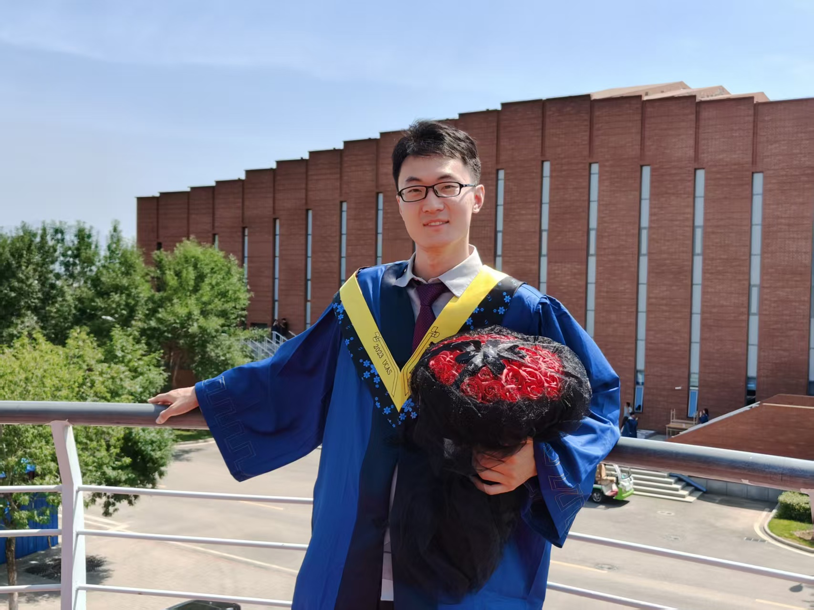

M.S. candidate studying why titanium alloys and structural steels fail after millions of loading cycles — and why some cracks take a decade to start and a second to finish.

My work sits at the boundary between mechanics and microstructure: I run fatigue tests to failure, then go back with SEM and EBSD to find out which grains, twins, or defects actually decided the outcome.
Ultrasonic (20 kHz) fatigue testing of TC17 titanium with artificial surface defects, tracking whether cracks form immediately or lie dormant for most of the specimen's life.
Comparing trapezoidal (dwell) and triangular (conventional) loading on notched and defective Ti-6Al-4V ELI specimens used in deep-sea submersible hulls.
Quasi in-situ electron backscatter diffraction on mated crack surfaces, connecting Schmid factors and local strain (KAM) to where nanograins and deformation twins actually form.
Four results from the papers below that changed how I think about defect-driven fatigue.
In TC17 titanium with a 332 µm-wide drilled defect, the S–N curve plateaus in the VHCF regime instead of descending — and SEM/EBSD found no fine-granular-area or nanograin layer around the defect, unlike internal-crack failures. In-situ imaging showed why: once a crack starts, it crosses the whole specimen in under a second, so the "critical stress" for failure is set by a slow, moisture- and hydrogen-driven process, not by cyclic damage alone.
Engineering Fracture Mechanics 272 (2022) 108721For smooth Ti-6Al-4V ELI specimens, holding peak stress shortens fatigue life. For notched specimens under the same local stress, it doesn't — and dwell life actually exceeds smooth-specimen conventional life. Defect size, which controls conventional fatigue life, becomes almost irrelevant under dwell loading: cumulative plastic strain, not crack growth from the defect, takes over as the dominant damage mode.
Journal of Marine Science and Engineering 9 (2021) 845Quasi in-situ EBSD on mated TC17 crack surfaces found {10-12} extension twins clustered exactly where KAM (strain) maps peak, and consistently in α grains with high Schmid factors for basal or prismatic slip. Some twin variants were nanoscale — direct evidence that twinning, not just dislocation glide, feeds the nanograin formation seen at crack tips.
International Journal of Fatigue 176 (2023) 107897Rotating-bending tests on 25CrMo4 and 30CrMnSiA steels aged up to 34,000 hours showed no measurable fatigue penalty below ~10,000 hours, but a clear drop beyond 20,000 — most likely surface corrosion and hydrogen uptake rather than any bulk microstructure change. Discontinuous loading (1 h on/off cycling), by contrast, had no harmful effect at all.
Metals 13 (2023) 511